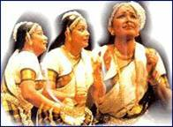

Mrs. Gauri Menon continues her series on the dance forms of India. Here she looks at a dance form that is close to every Malayalee's heart.

Like any other classical dance, Mohini Attam has a colourful and romantic legendary background. The word means the dance of the enchantress and the story is that the style originated from the dance performed by Mohini, the enchantress. The story goes thus
-The mighty Asura King, Bhasmasura, wanting to acquire greater strength began meditating on Siva and such was the severity of his penance that the three worlds shuddered. Siva appeared before him and asked him what he wished for - the interesting part is that Siva being highly cosmopolitan makes no distinction between Suras and Asuras - Also he is a Kshipra Prasadi - one easily pleased. Replied the demon King, "O' Siva, bless me with this boon. Any object I touch must get reduced to ashes at the very moment." "Your wish is granted," said Siva.
Bhasmasura had an uncanny notion. Why not make Siva himself as the first test case? The Asura was approaching Lord Siva with his hands out-stretched. What a situation! In a trice there appeared in front of the Asura the loveliest of damsels... Bhasmasura stood dazed... Completely bewitched. It was beauty personified. Slowly the maiden began to dance. Asura felt she was wanting him to follow her movements and started imitating the dancer - Mohini, the enchantress. Little did he know that it was Vishnu, the Lord who protected every one, who was in front of him disguised as Mohini. As the dancing continued, the speed also increased... Mohini began making several gestures, Asura copying her - the final gesture was touching one's own head. The infatuated demon had only Mohini in his mind and ... in an instant the Asura was enveloped in flames. There he lay a heap of ashes. The demon king was thus by his own lure reduced to ashes.
--------------------------------------------------------------------------------
"Ângikam bhuvanam yasyâ
Vâchikam sarva vângmayam
Âhâryam chandra thârâthi
Tham namaha sâtwikam sivam."
- Nandikeswara in Abhinaya Darpana
Like other classical dances of India, Môhini Âttam also consists of Nritta (Percussary dance) Nritya (Interpretative dance ) and Abhinaya (mime) - the last in this type is further subdivided into Ângilea - Vâchika, Âhârya and Sâtwika forms as mentioned in Abhinaya Darpana. While most other classical styles are based on the tenets laid down by the great saint Bharatha in his Nâtya Sâstra, this style - Môhini Âttam, abides by the said tenets and also adheres to the principles enunciated by Nandikeswara in his Abhinaya Darpana. Hasthâs are used in Asamyukta (single hand), Samyuktra (both hands) and in Misra (either way) positions. The bobbing gait forward - backward or side ways and the graceful swaying of the trunk or head are special to this style. The basic sitting posture with the feet apart is reminiscent of Kathakali - the basic unit of movement is known as kalâsam as in Kathakali , but the parallel goes no further. But for the music accompanying which again as in Kathakali is in the Sôpâna style with its typical slow tempo. While Kathakali slides to religious connotations and to the rigid formalities of a traditional art, Môhini Âttam is free of the traditional rigid formalism - the items are very earthly and almost coquettish. That helps the dancer to be subjective and thereby establish an immediate rapport with the audience. Basically, it is the Nayika (heroine) a devotee pining for the Deva or Nayaka (hero). Chari (special type of movement) and Nritta Mudra (hand movement without any special meaning) are special to Mohini Attam.
Coming to the various items, there is similarity with Bharata Natyam. The invocatory dance Cholkkattu performed in praise of Siva and Parvathi is very similar to Alarippu and Sabdam of Bharata Natyam. But while in Bharatha Natyam the Jatis are recited separately, here they are incorporated into the main melody of the Varnam. Padams, Kirtis, Thillana, Javalis and Slokas are the varying items in Mohini attam as well.
The costume worn is something between the robe of the female characters in Kathakali and the traditional sophisticated attire of the ancient Kerala women - invariably the sari is pure white with gold border. Hair is tied into a bun in the traditional way and decked with gold ornaments and flowers. Heavy stony gold ornaments as well as gold choker, Odyanam and bangles are a must - of course heavy anklets as well.
Mohini Attam is definitely of more recent origin, unlike Bharata Natyam and Kathakali. Critics and scholars have varying opinions regarding its age. While some believe this art goes back to the days of Silappadikaram between the end of the 2nd century A.D. and the beginning of the 3rd century A.D., others maintain it developed more recently out of the traditional folk dances in Kerala. Are the classical and folk dances really exclusive? Study shows that while the classical types provide the thematic content and gravity to folk dances the latter provides freshness and buoyancy to the classical variety thus helping to make it less stereotyped. One thing is certain. The art is evolved in the present form in the court of our celebrated music composer Swathi Thirunal maharajah. Assisted by that gifted Natya Vidwan Vadivelu Nattuvanar, one of the famous Tanjore Quartet, this great ruler - cum·-·composer gave refinement and form to a vaguely existing dance style. Perhaps it has to fill in the vacuum between the highly ritualistic dances of the temples such as Krishnanattam and the crude secular folk dances or it could also have been developed as the dance of the fair sex - being typically Lasya - to entertain royalty and the court - or again may be the Maharajah felt the need for a special type of dance for the women in the classical style as in Kathakali and in other dances women are not participating. Whatever the reason, Mohini attam has certainly a distinctive classical individuality of its own and it is perfectly feminine being pure Lasya. If Swathi Thirunal Maharaja, gave Mohini attam the required style and form, certainly it was Mahakavi Vallathol who made it one of the most popular classical dances of the present day. It was a Herculean task. With great dedication and fervour the great poet of Kerala started the now world- famous dance institution Kala Mandalam in the early 1930s. But for his untiring enthusiasm, our classical dances such as Kathakali and Mohiniyattam and several other dances would never ever have come to limelight. Kalliani Kutty Amma, Shanta Rao, Thara Raja Kumar, Kanak Rele and Chandrabhaga Devi are a few of the gifted Mohini Attam dancers who dedicated their lives for the revival of the exquisite Lasya form and whose names could remain in the minds ïf the art lovers of all time.